Dufte, blandinger og gusplan
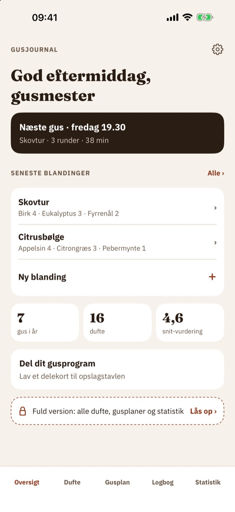
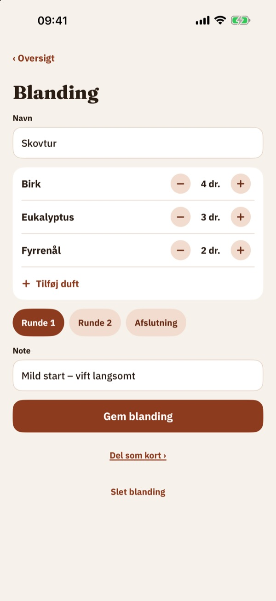
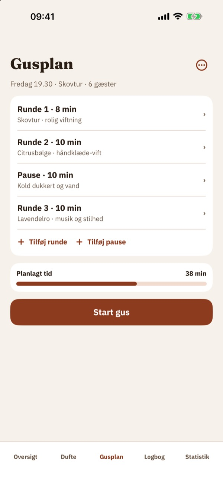
Gusjournal er notesbogen til dig, der laver saunagus: dufte, blandinger, gusplaner og logbog samlet ét sted.
Logbogen, 10 dufte og 3 blandinger kan bruges uden køb. Fuld version er et engangskøb, der låser alle dufte, gusplaner med timer, statistik og delekort op. Intet abonnement.
Gusjournal er en notesbog og giver ikke sundhedsråd. Følg altid producentens anvisning for æteriske olier.
Terms of Use (EULA): https://www.apple.com/legal/internet-services/itunes/dev/stdeula/
Privacy: https://baytechbv.github.io/privacy/saunagus-eu/
Düfte, Mischungen, Aufgussplan
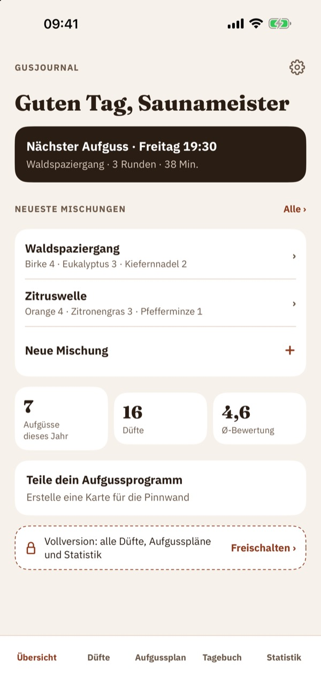
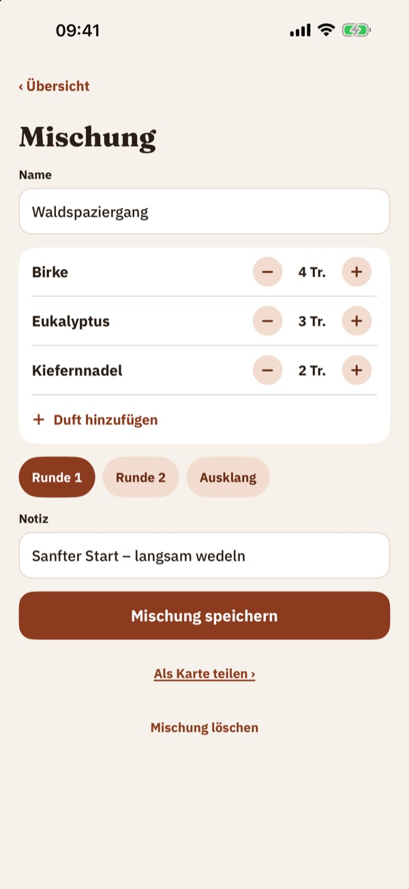
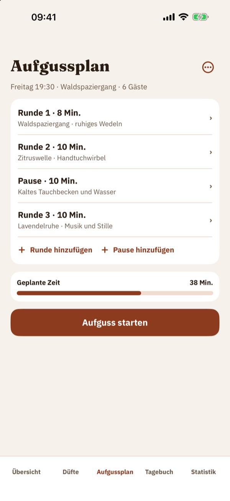
Gusjournal ist das Notizbuch für alle, die Saunaaufgüsse machen: Düfte, Mischungen, Aufgusspläne und Tagebuch an einem Ort.
Tagebuch, 10 Düfte und 3 Mischungen kannst du ohne Kauf nutzen. Die Vollversion ist ein Einmalkauf und schaltet alle Düfte, Aufgusspläne mit Timer, Statistik und Teilen-Karten frei. Kein Abo.
Gusjournal ist ein Notizbuch und gibt keine Gesundheitsratschläge. Beachte immer die Herstellerangaben für ätherische Öle.
Terms of Use (EULA): https://www.apple.com/legal/internet-services/itunes/dev/stdeula/
Privacy: https://baytechbv.github.io/privacy/saunagus-eu/
Geuren, mengsels en planning
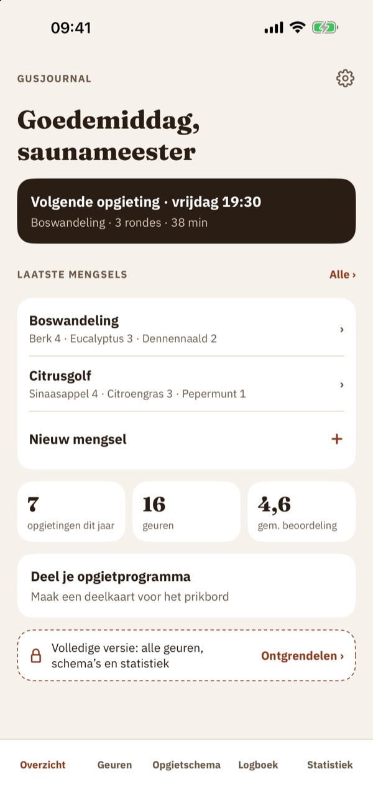
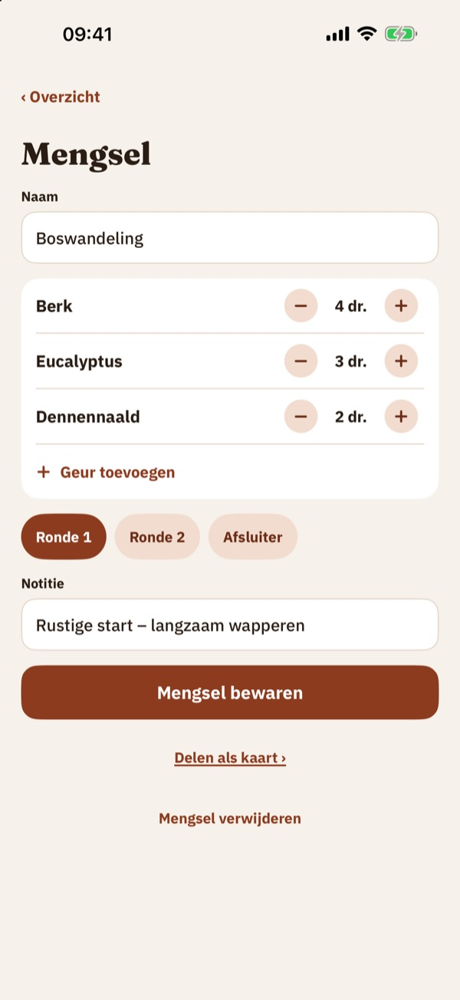
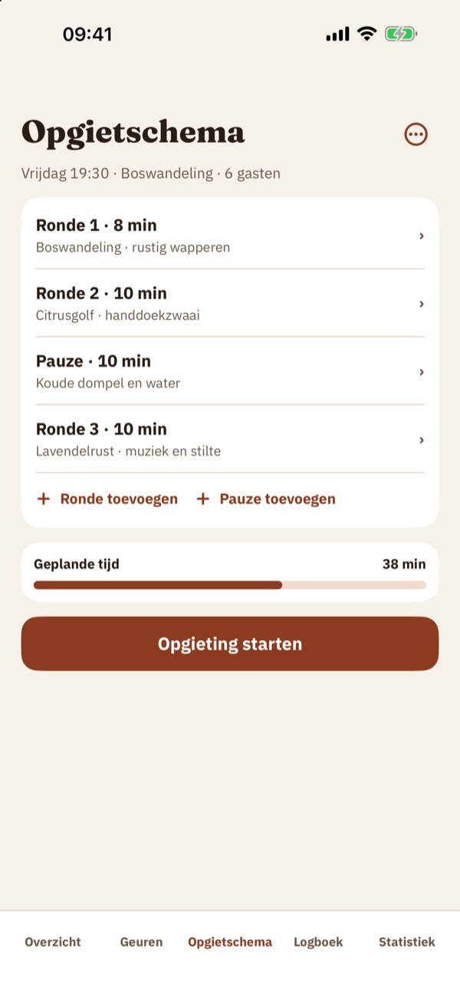
Gusjournal is het notitieboek voor iedereen die saunaopgietingen doet: geuren, mengsels, schema’s en logboek op één plek.
Het logboek, 10 geuren en 3 mengsels kun je zonder aankoop gebruiken. De volledige versie is een eenmalige aankoop voor alle geuren, schema’s met timer, statistiek en deelkaarten. Geen abonnement.
Gusjournal is een notitieboek en geeft geen gezondheidsadvies. Volg altijd de aanwijzingen van de fabrikant voor etherische oliën.
Terms of Use (EULA): https://www.apple.com/legal/internet-services/itunes/dev/stdeula/
Privacy: https://baytechbv.github.io/privacy/saunagus-eu/
Dofter, blandningar, plan
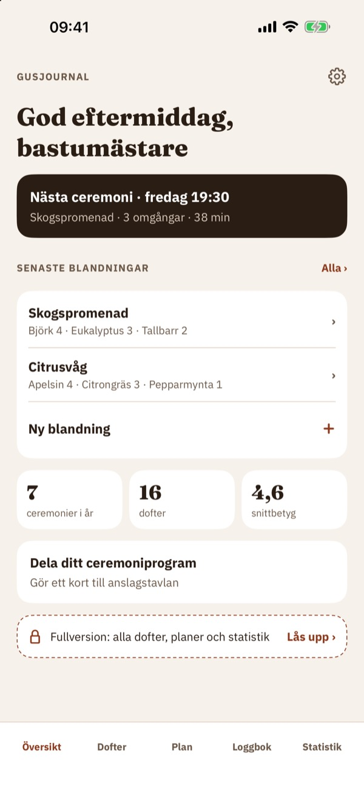
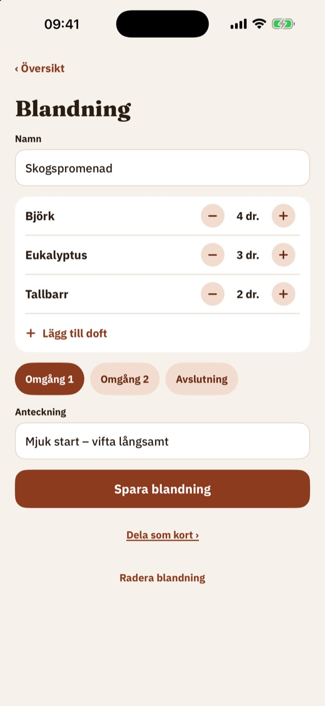
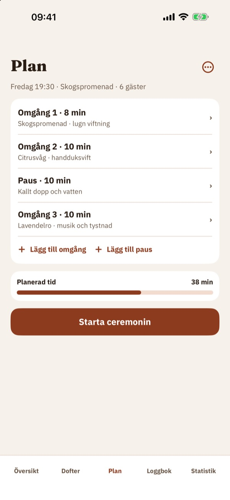
Gusjournal är anteckningsboken för dig som håller i bastuceremonier (aufguss): dofter, blandningar, planer och loggbok på ett ställe.
Loggboken, 10 dofter och 3 blandningar kan användas utan köp. Fullversionen är ett engångsköp som låser upp alla dofter, planer med timer, statistik och delningskort. Ingen prenumeration.
Gusjournal är en anteckningsbok och ger inga hälsoråd. Följ alltid tillverkarens anvisning för eteriska oljor.
Terms of Use (EULA): https://www.apple.com/legal/internet-services/itunes/dev/stdeula/
Privacy: https://baytechbv.github.io/privacy/saunagus-eu/
Tuoksut, sekoitukset, ohjelma
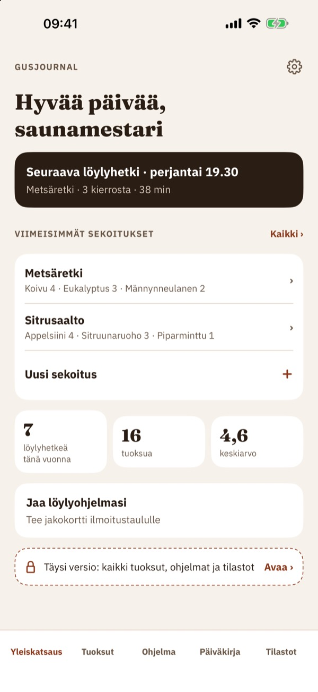
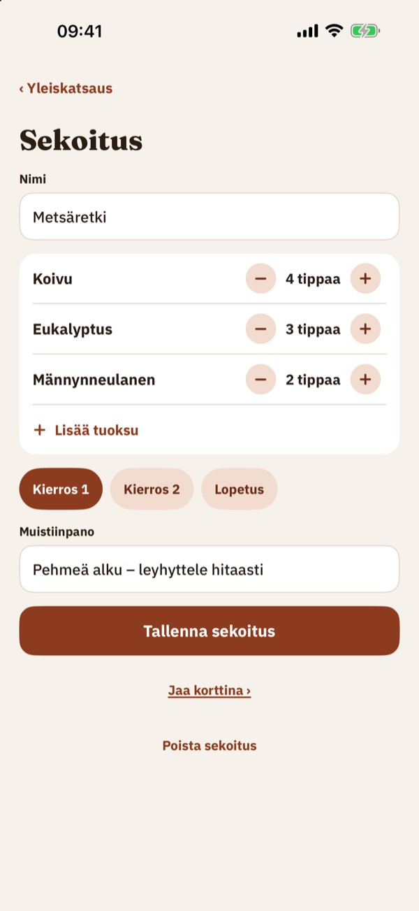
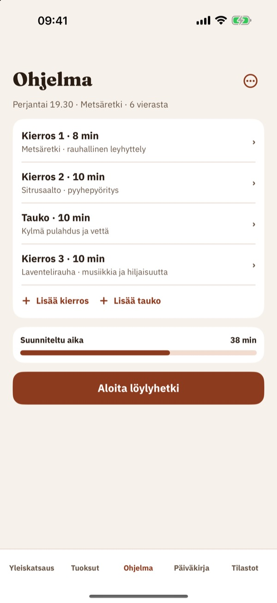
Gusjournal on muistikirja löylyhetkiä (aufguss) vetävälle: tuoksut, sekoitukset, suunnitelmat ja päiväkirja yhdessä paikassa.
Päiväkirjaa, 10 tuoksua ja 3 sekoitusta voi käyttää ilman ostoa. Täysi versio on kertaosto, joka avaa kaikki tuoksut, suunnitelmat ajastimella, tilastot ja jakokortit. Ei tilausta.
Gusjournal on muistikirja eikä anna terveysneuvoja. Noudata aina valmistajan ohjeita eteerisille öljyille.
Terms of Use (EULA): https://www.apple.com/legal/internet-services/itunes/dev/stdeula/
Privacy: https://baytechbv.github.io/privacy/saunagus-eu/